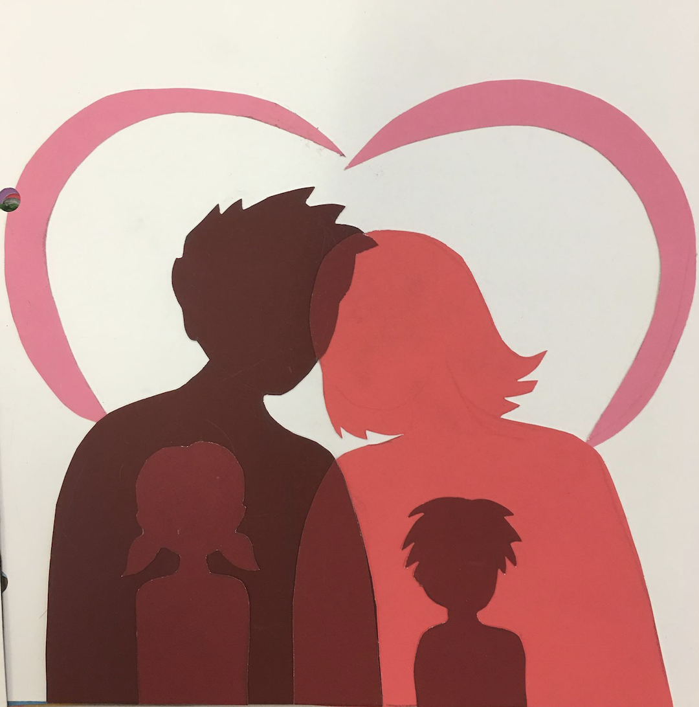

Problem:
Use Albers color principles to create optical illusions of translucency and different colors.
Action:
I cut out two people (a mom and a dad) on colored paper using two different colors. Then, I cut out a piece of an in-between color for the part where the mom and dad’s heads overlap. I used this same in-between color to cut out the silhouettes of a little boy and a girl to show that the children are like a mixture of the two parents.
Results:
Two optical illusions. Firstly, the paper for the mom and dad look like they are translucent. Secondly, the two children cut-outs are exactly the same in-between color, but the one on a darker background looks like a lighter color than the one on a lighter background.
Tools Used:
Colored paper